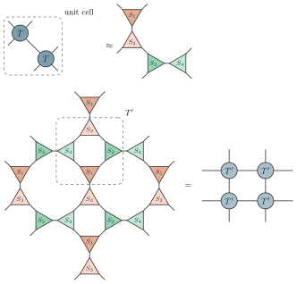

Examples / 24
A TRG step

One step of the tensor renormalization group of Levin and Nave, on the square lattice of a two-dimensional partition function: every tensor T is split in two, and four of the halves are contracted into the tensor T' of a lattice twice as coarse.
The unit cell is two sites, one of each colour of the checkerboard, because the two are split two ways. The split is a singular value decomposition, truncated, so the first row is only approximately equal. It goes two ways, by the colour of the site on the checkerboard: on one colour the indices up the lattice go to one half and those down it to the other, on the other colour the indices to the left and to the right; each half is a triangle whose flat side carries its two indices of the lattice and whose apex points at its other half, and the index between the halves is the bond the truncation keeps. The lattice is drawn turned, as every grid is, so the two ways are one above the other and side by side. The two splits leave four tensors, S1 and S3 above and below, S2 and S4 left and right, and each has its own colour: the same colour is the same tensor, here and wherever it appears in the lattice.
Split, the lattice falls into squares of four halves around its plaquettes. Each square – one of each of the four halves – is contracted into one tensor, T', a new tensor and so a new colour, framed here for one of them, and the T' form a square lattice of their own – turned against the old one by 45 degrees, which is why it is drawn upright – with a lattice spacing larger by the square root of two. Repeated, the step coarse-grains the whole lattice.
The picture
Point at a line to see what it draws, or at the picture to see which line drew it.
\begin{tikzpicture} \tngrid[scale=0.8]{A}{2}{1}{coef/$T$} \tnconnect{A} \tnopen{around}{A} \tnframe[label=unit cell]{A-1-1, A-2-1} \tnapprox \tngrid[split, scale=0.8]{B}{2}{1}{half1/$S_1$, half3/$S_3$, half2/$S_2$, half4/$S_4$} \tnconnect{B} \tnopen{around}{B} \tnbreak \tngrid[split, scale=0.8]{C}{3}{3}{half1/$S_1$, half3/$S_3$, half2/$S_2$, half4/$S_4$} \tnconnect{C} \tnopen{around}{C} \tnframe[label=$T'$]{C-1-1-bottom, C-2-1-left, C-1-2-right, C-2-2-top} \tneq \tnstack[scale=0.8]{Q}{2}{a, b} \tnlayer{Q}{a}{2*coarse/$T'$} \tnlayer{Q}{b}{2*coarse/$T'$} \tnconnect{Q} \tnopen{up}{Q} \tnopen{down}{Q} \tnopen{left}{Q} \tnopen{right}{Q}\end{tikzpicture}
The whole file
\documentclass[border=4pt]{standalone}\usepackage{amsmath,amssymb}\usepackage{tikz-tensors}\input{notation}\begin{document}\begin{tikzpicture} \tngrid[scale=0.8]{A}{2}{1}{coef/$T$} \tnconnect{A} \tnopen{around}{A} \tnframe[label=unit cell]{A-1-1, A-2-1} \tnapprox \tngrid[split, scale=0.8]{B}{2}{1}{half1/$S_1$, half3/$S_3$, half2/$S_2$, half4/$S_4$} \tnconnect{B} \tnopen{around}{B} \tnbreak \tngrid[split, scale=0.8]{C}{3}{3}{half1/$S_1$, half3/$S_3$, half2/$S_2$, half4/$S_4$} \tnconnect{C} \tnopen{around}{C} \tnframe[label=$T'$]{C-1-1-bottom, C-2-1-left, C-1-2-right, C-2-2-top} \tneq \tnstack[scale=0.8]{Q}{2}{a, b} \tnlayer{Q}{a}{2*coarse/$T'$} \tnlayer{Q}{b}{2*coarse/$T'$} \tnconnect{Q} \tnopen{up}{Q} \tnopen{down}{Q} \tnopen{left}{Q} \tnopen{right}{Q}\end{tikzpicture}\end{document}